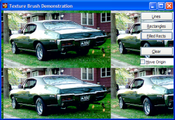
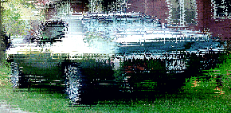

Texture Brush Code (123K)
Texture Brush Code (123K)
 28 Mar 2003
28 Mar 2003
First Posted
 Tiling Bitmaps into Controls, Forms and MDI Form backgrounds
Tiling Bitmaps into Controls, Forms and MDI Form backgrounds
 PopupMenu DLL - Create Unlimited Popup Menus
PopupMenu DLL - Create Unlimited Popup Menus
 Creating Single Pixel Dotted Lines
Creating Single Pixel Dotted Lines

Drawing With Textures
This article provides an extension to the technique demonstrated in Creating Single Pixel Dotted Lines to show how you can easily create a brush for drawing shapes from any bitmap, picture or device context.
Texture Brushes
GDI provides two different classes of bitmaps for drawing with, neither of which are completely supported in standard VB. The standard type is a solid brush, which can either be generated for any RGB colour or can be borrowed from the system for any of the System Colors. The second type is a brush based on any bitmap. The article Creating Single Pixel Dotted Lines demonstrated how to create a bitmap brush by generating a bitmap from its bits at runtime; this article provides an equivalent class which generates the bitmap brush from any picture, hDC or bitmap you care to provided to it.
The cTextureBrush Class
The cTextureBrush class wraps the bitmap brush functionality of GDI into a class which is simple to use with VB. To create an instance of the brush, use the CreateFromPicture or CreateFromDC methods. Once you've done that, you can draw lines, rectangles and filled rectangles using the DrawLine and Rectangle methods. Note that the optional oForeColor and oBackColor arguments will only do something if you've created your texture brush from a monochrome bitmap.
A Little Fun
The most typical use of a texture brush is to tile a background with an image. This is quicker and easier than the tiling code I used before in articles like Tiling Bitmaps into Controls, Forms and MDI backgrounds and the Popup Menu ActiveX DLL, but then you live and learn!
Any bitmap brush allows you to set its drawing origin relative to the DC you're drawing onto; this function is provided in the cTextureBrush class by the SetBrushOrigin method. If you draw a series of random rectangles using the cTextureBrush class at random positions, and then adjust the offset by a random amount between (say) 0 and 7, then you can create some unusual noisy effects like the one shown below:
